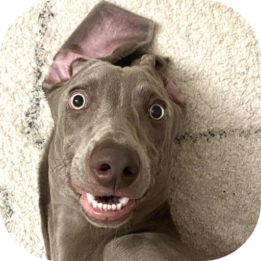

我真的没病
越狱插件源
添加到 Sileo 添加到 Zebra 添加到 Cydiahttps://pbwk9999.github.io/
按钮没反应的话，把上面的地址复制到 Sileo 的「来源 → 添加」里手动加。

越狱插件源
添加到 Sileo 添加到 Zebra 添加到 Cydiahttps://pbwk9999.github.io/
按钮没反应的话，把上面的地址复制到 Sileo 的「来源 → 添加」里手动加。